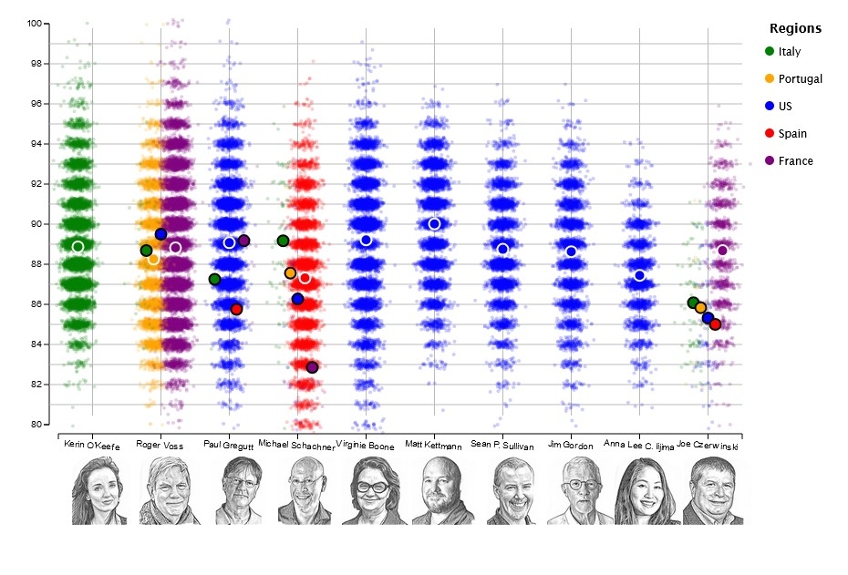

unWINEd : Visualizing the World's Wines
Wines are a familiar spirit to all adults, but do we really know what we're drinking? Does the country on the wine bottle's label matter? Can we really trust 'wine reviewers' to give us unbiased opinions?
Reviewers and Wine - Are the Tastebuds Biased?
Do different reviewers prefer certain countries' wines? Do those reviewers taste a variety of countries' wines, or do they tend to focus on a single country?
(Credit to WSJ, whose hedcut model I used to create the portraits. I sourced those portraits from WineEnthusiast.com.)
It looks like reviewers certainly tend to specialize in certain countries - namely, we see a lot of the top reviewers of WineEnthusiast only tasting American wines. Given that WineEnthusiast is a site based in America, maybe this is an expectable outcome.
For reviewers like Roger Voss, country doesn't seem to make a large difference in his perception. However, Michael Schachner seems to dislike French varieties, while Joe Czerwinski strongly prefers them.